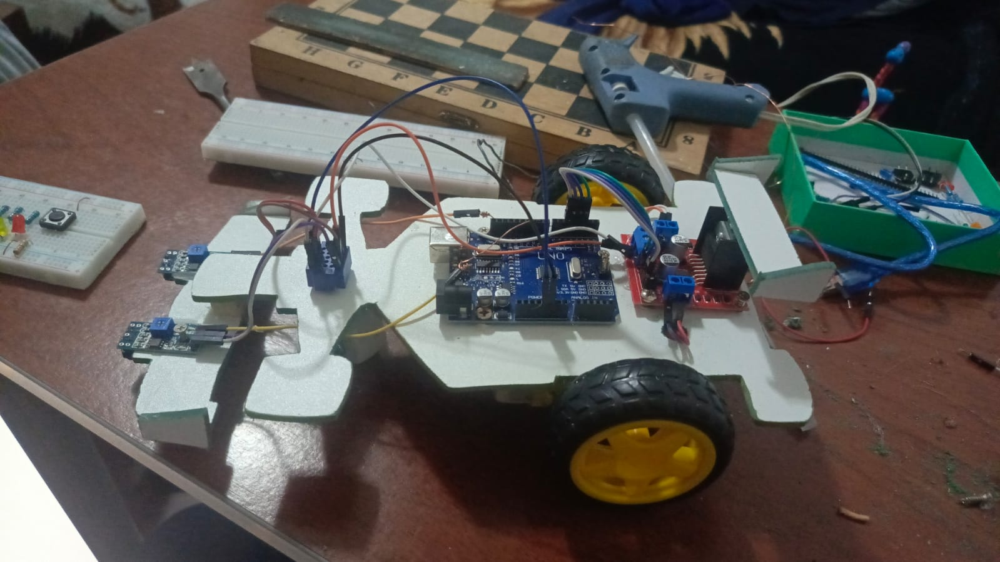

DESCRIPCIÓN DEL PROYECTO

Imagina un robot explorador que puede "ver" y reaccionar al mundo que lo rodea a través de los colores. Danbot no es solo un robot, es un aventurero tecnológico diseñado para detectar colores y tomar decisiones en tiempo real. Gracias a su sensor de color, puede moverse, cambiar de dirección y adaptarse a su entorno de manera inteligente.
Este pequeño pero poderoso explorador es una herramienta educativa ideal para introducir a los estudiantes en el mundo de la robótica y la programación. Con Danbot, aprender se convierte en una experiencia interactiva, divertida y desafiante, donde cada color representa una nueva posibilidad y cada línea de código abre un mundo de oportunidades.
🚀 ¡Descubre cómo Danbot transforma el aprendizaje en una aventura tecnológica!